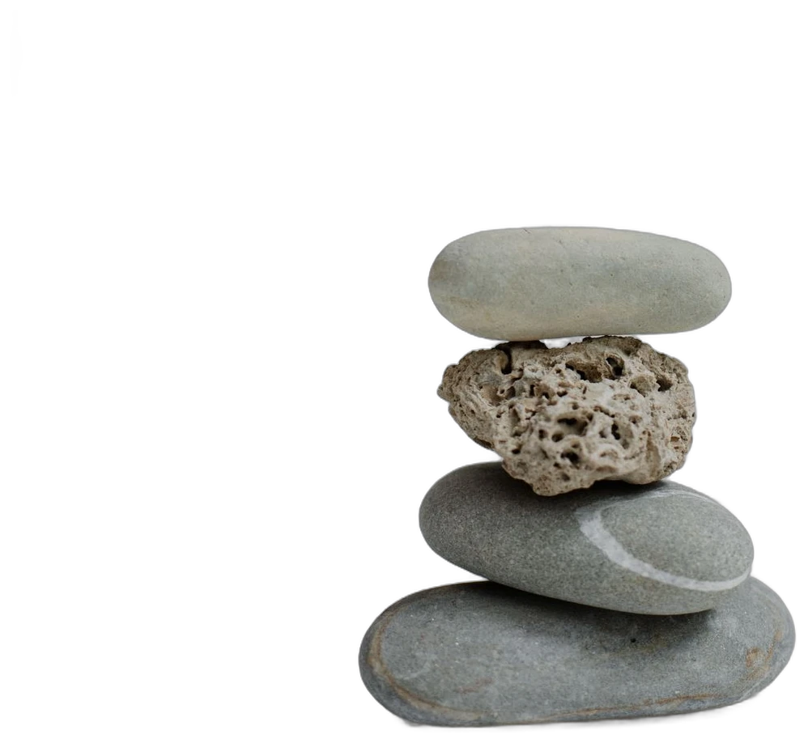
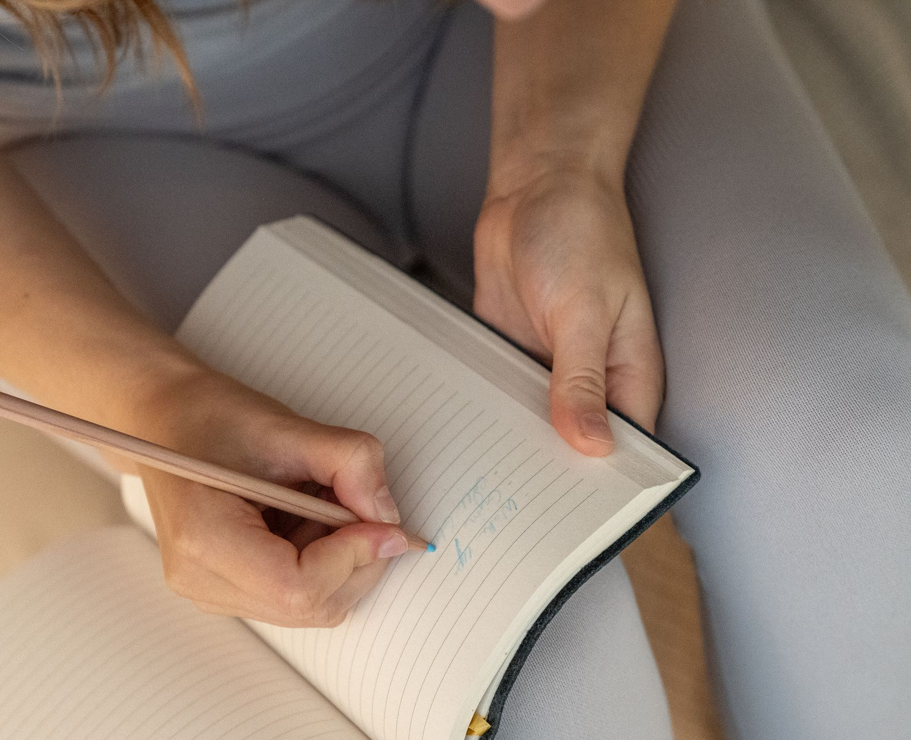

Curso de Biodecodificación
Aprendé a leer el sentido biológico y emocional de los síntomas. Un recorrido para entender qué te quiere mostrar tu cuerpo y transitarlo con más consciencia.
Quiero saber másTe acompaño a transitar la ansiedad, ordenar tus emociones y reencontrarte con lo que sos, desde la biodecodificación, el mindfulness y las distinciones ontológicas.

Acompaño procesos de transformación personal con una mirada que integra el cuerpo, la emoción y la palabra. Trabajo con biodecodificación para comprender el sentido biológico y emocional detrás de lo que sentís, con mindfulness para volver al presente y con distinciones ontológicas que ordenan tu manera de mirar el mundo.
No hay recetas mágicas. Hay un espacio seguro, tu ritmo y herramientas concretas para que la calma deje de ser algo lejano.
Elegí la puerta de entrada que resuene con vos hoy. Todas llevan al mismo lugar: volver a vos.
Aprendé a leer el sentido biológico y emocional de los síntomas. Un recorrido para entender qué te quiere mostrar tu cuerpo y transitarlo con más consciencia.
Quiero saber másEncuentros para practicar mindfulness y gestión emocional en grupo. Herramientas simples para bajar la ansiedad y volver al presente, aplicables desde el primer día.
Ver talleresTu práctica sostenida en el tiempo: meditaciones guiadas, journaling terapéutico y dinámicas para el hogar. Esencia, mindfulness y distinciones ontológicas, mes a mes.
Quiero sumarmeUn primer contacto por WhatsApp para conocernos, escuchar dónde estás y ver qué necesitás hoy.
Damos nombre a lo que sentís. Distinguimos, ordenamos y encontramos el sentido detrás del síntoma.
Te llevás herramientas concretas —respiración, journaling, meditación— para sostener el cambio en tu día a día.
La calma deja de ser un momento y se vuelve una forma de habitarte. Ese es el objetivo del recorrido.

Escribime por WhatsApp y charlamos sin compromiso sobre cómo puedo acompañarte. El primer respiro empieza con un mensaje.
Escribime por WhatsApp